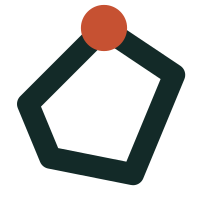
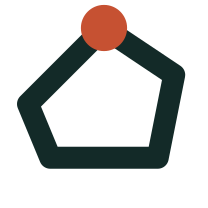
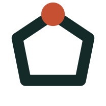

BATRUC / PROPOSTA DE LOGO 01 — PARA APROVAÇÃO (O ORIGINAL NÃO FOI ALTERADO)
CABEÇALHO SIMULADO — DESENHO À ESQUERDA DO LETTERING (CLAVE RUMBA)
RASGO / INSTRUMENTO EM INCUBAÇÃO
MATEMÁTICAFÍSICAMÚSICA01
O DESENHO
O polígono de um ritmo: as batidas de um ciclo de 16 pulsos, ligadas em volta do círculo do tempo (G. Toussaint, The Geometry of Musical Rhythm, 2013). O ponto vermelho é o tempo forte. Cada clave dá uma silhueta própria — a forma do desenho é o próprio batuque. O lettering é o do original, refeito em vetor.
SÓ O DESENHO


